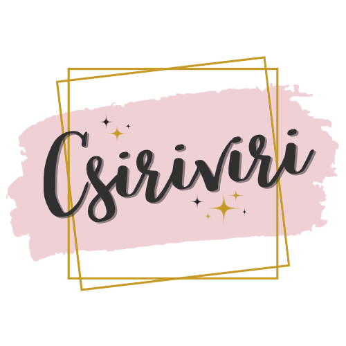

Három lehetséges kezdőoldalVálassz egy irányt a Csiriviri oldalához
Nyisd meg és görgesd végig mindhárom változatot. A színek és a logó közösek, a kezdőoldal szerkezete és hangulata más.
Rózsaszín történet
Széles fotós nyitás, három képes belépő és Évi személyes története.
MegnézemÜnnepek három arca
Azonnali választás három fotós útvonal közül, feszesebb elrendezésben.
MegnézemÉvi alkotóműhelye
Személyes, rétegzett képek, finom papírtextúrák és kézműves hangulat.
MegnézemEzek látványtervek. A szolgáltatási aloldalak és a működő ajánlatkérés a választott irány után készülnek.